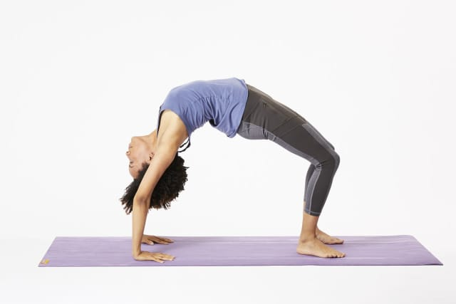

Sejarah Senam Lantai
Sejarah senam lantai pertama kali dikenal oleh bangsa Cina, pada 2700 sebelum masehi silam, bangsa Cina kuno sudah mengenal gerakan sederhana dari senam lantai. Namun jika kita melihat dari segi yang lebih umum, senam sebenarnya pertama kali berasal dari Yunani.
Pada masa lampau, biarawan Cina dulu mengenal gerakan senam bukan sebagai pertunjukan ataupun tari, namun sebagai alat bela diri dan pengobatan atau terapi. Hal tersebut diperkuat dengan adanya peninggalan kitab warisan dari Kong Hu Cu yang merangkum gerakan atau bentukan sederhana dari dasar senam lantai.
Di Indonesia sendiri sejarah senam lantai di kenal sejak tahun 1912. Saat itu adalah masa penjajahan Belanda berlangsung. Pada saat itu senam dimasukkan dalam kurikulum sekolah, dan dari situlah masyarakat Indonesia mulai mengenal senam.
Pada tahun 1916 adalah awal dimana penyebaran senam lantai di seluruh Indonesia. Dr. H. F Minkema adalah pencetus tersebarnya senam di Indonesia. Pada 1918 silam Dr. Minkema mulai mendirikan kursus senam lantai tepatya di kota Malang. Di kota Bandung juga di bilang sebagai pelopor menyebarnya senam di Indonesia. Karena sekolah senam pertama kali didirikan di Bandung pada tahun 1922 dengan nama MGSS.
Namun pada tahun 1942 segala aktifitas senam harus terhenti karena pada saat itu Jepang menjajah Indonesia dan melarang semua kegiatan senam. Sebagai gantinya jepang memberikan taiso, taiso merupakan senam pagi yang hanya dilakukan pada pagi hari oleh murid sekolah.
Singkat cerita setelah penjajahan jepang, pada tahun 1963, tepatnya pada tanggal 14 Juli Indonesia resmi mendirikan organisasi senam yang di beri nama PERSANI. Organisasi PERSANI dibentuk oleh tokoh- tokoh olah raga Indonesia pada saat itu.
Pada tahun 1964 Indonesia mengikuti perlombaan senam lantai internasional. Kompetisi pertama itu dikenal sebagai GANEFO 1 yang diikuti oleh Indonesia, Rusia, Cina, Mesir, Korea. Itulah beberapa sejarah perkembangan senam lantai dari masa ke masa hingga sampai masuk ke Indonesia.
Gerakan-gerakan pada Senam Lantai
Roll Depan

Guling depan adalah gerakan yang bertujuan untuk melatih menguatkan otot punggung dan melatih keseimbangan tubuh.
Roll Belakang

Jenis senam lantai ini adalah kebalikan dari roll depan. Berguling ke belakang (roll belakang) dilakukan dengan cara yang mirip berguling ke depan namun ke arah sebaliknya.
Kayang (Bridge)

Kayang adalah posisi tubuh yang bertumpu pada kedua tangan dan kaki dengan punggung membentuk busur dengan posisi abdomen menghadap ke langit-langit. Melakukan jenis gerakan senam lantai ini dapat bermanfaat untuk meregangkan area dada dan meluruskan lengan, pergelangan tangan, sekaligus bersama kaki.
Latihan kayang ini juga memperkuat otot perut, kaki, bahu, tangan dan pinggang.
Berdiri dengan Tangan (Handstand)
Berdiri dengan tangan (handstand) berarti menopang seluruh tubuh dalam keadaan stabil, dalam posisi terbalik yang lurus, dengan menggunakan tangan. Jenis senam lantai ini bermanfaat untuk memperkuat bahu, lengan, dan pergelangan tangan.
Sikap Lilin

Sikap lilin adalah posisi saat seluruh tubuh lurus bertumpu pada bahu dengan siku dan tangan membantu menopang berat tubuh di pinggang.
Splits
Splits merupakan gerakan meregangkan kaki ke samping, depan, dan belakang. Seluruh tubuh bagian bawah, termasuk kaki, akan bersentuhan dengan tanah.
Sikap Kapal Terbang

Sikap kapal terbang adalah bentuk gerakan dengan berdiri bertumpu pada salah satu kaki terkuat lalu mengangkat kaki yang lain dan menjulurkannya ke belakang. Gerakan tersebut dinamakan sikap kapal terbang karena posisi tubuh terlihat seperti kapal terbang atau pesawat.
Meroda
Gerakan meroda adalah salah satu gerakan senam lantai untuk melatih ketangkasan dan kelenturan tubuh. Gerakan meroda adalah gerakan memutar badan dengan sikap awal menyamping arah gerakan dengan tumpuan berat badan ketika berputar menggunakan kedua tangan dan kedua kaki.
Headstand
Headstand adalah gerakan berdiri terbalik menggunakan kepala sebagai tumpuan. Gerakan ini mampu menjaga kekuatan otot, meningkatkan kelenturan tubuh, sampai melancarkan peredaran darah ke otak.
Lompat Harimau (Tiger Sprong)

Lompat Harimau merupakan pengembangan dari gerakan salto. Manfaat lompat harimau untuk kesehatan dan kebugaran tubuh. Melatih otot tangan dan kaki. Melatih keseimbangan, ketangkasan, dan kelincahan serta membantu meningkatkan kesehatan jantung.